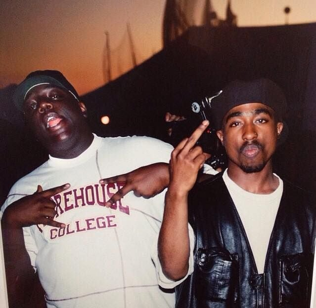

Ashes Test Series refers to the prestigious cricket tournament played between Australia and England. The name "Ashes" originated from a satirical obituary published in the British newspaper "The Sporting Times" in 1882 after Australia's first-ever Test victory over England on English soil. The obituary humorously stated that English cricket had died and "the body will be cremated, and the ashes taken to Australia." Since then, the Test series between the two cricketing nations has been known as "The Ashes," and it is one of the most fiercely contested and iconic rivalries in the sport of cricket. The Ashes Test Series is played in a five-match format, alternating between the two countries. Australia and England take turns hosting the series every couple of years.
The history of The Ashes dates back to 1882 and is closely tied to a significant cricket match between Australia and England at The Oval in London. The match took place from August 28 to 29, 1882, and it was the third Test match of the series. Australia achieved their first-ever Test victory on English soil, defeating England by just seven runs. This unexpected loss to the Australians shocked the English cricketing establishment and led to the publication of a satirical obituary in "The Sporting Times" on September 2, 1882. The obituary humorously announced the "death" of English cricket and stated that "the body will be cremated, and the ashes taken to Australia." The term "ashes" quickly caught on, and it became a symbol of the intense cricketing rivalry between Australia and England. The concept of the "Ashes" was then formalized when the captain of the English team, Ivo Bligh (later Lord Darnley), promised to "regain those ashes" during England's tour of Australia in 1882-1883. The following series took place in Australia, and it was named "The quest to regain The Ashes." The term "Ashes" referred to the imaginary trophy that was up for grabs in the Test series. The series consisted of three Test matches, and England won two out of three, thus "regaining" the ashes. A group of Melbourne women then presented Ivo Bligh with a small terracotta urn, believed to contain the ashes of a cricket ball, as a symbolic representation of the "Ashes." Since then, the terracotta urn, known as "The Ashes urn," has become the symbol of the cricketing rivalry between Australia and England. However, it is important to note that the urn itself is not the official trophy for the Ashes Test series. The Ashes series continues to be played between the two countries, with the winner of the series taking home the bragging rights associated with winning the Ashes. The Ashes Test series has become one of the most iconic and fiercely contested rivalries in the history of cricket. It is played with tremendous passion and spirit, and both teams vie for the opportunity to hold the urn aloft, symbolizing cricketing supremacy between the two nations.
In Australia, the grounds currently used are The Gabba in Brisbane (first staged an England–Australia Test in the 1932–33 season), Adelaide Oval (1884–85), the Melbourne Cricket Ground (MCG) (1876–77), and the Sydney Cricket Ground (SCG) (1881–82). A single Test was held at the Brisbane Exhibition Ground in 1928–29. Traditionally, Melbourne hosts the Boxing Day Test and Sydney hosts the New Year's Day Test. Additionally the WACA in Perth (1970–71) hosted its final Ashes Test in 2017–18 and was due to be replaced by Perth Stadium for the 2021–22 series. However, Western Australian border restrictions and quarantine requirements during the COVID-19 pandemic led to a change in venue for the final Ashes Test to Bellerive Oval in Hobart. This was the first Ashes Test match to be held in Tasmania. Cricket Australia proposed that the 2010–11 series consist of six Tests, with the additional game to be played at Bellerive Oval in Hobart. The England and Wales Cricket Board declined and the series was played over five Tests. In England and Wales, the grounds currently used are: Old Trafford in Manchester (1884), The Oval in Kennington, South London (1884); Lord's in St John's Wood, North London (1884); Headingley in Leeds (1899) and Edgbaston in Birmingham (1902). Additionally Sophia Gardens in Cardiff, Wales (2009); the Riverside Ground in Chester-le-Street, County Durham (2013) and Trent Bridge at West Bridgford (1899), have been used and one Test was also held at Bramall Lane in Sheffield in 1902. Traditionally the final Test of the series is played at the Oval. Sophia Gardens and the Riverside were excluded as Test grounds between the years of 2020 and 2031 and therefore will not host an Ashes Test until at least 2035. The ECB announced the 2027 and 2031 Ashes series venues will held at Lord's (2027 and 2031), The Oval (2027 and 2031), Edgbaston (2027), Trent Bridge (2027 and 2031), The Rose Bowl (2027), Old Trafford (2031) and Headingley (2031). [66]
2Pac and Biggie (Freestyle At Table)